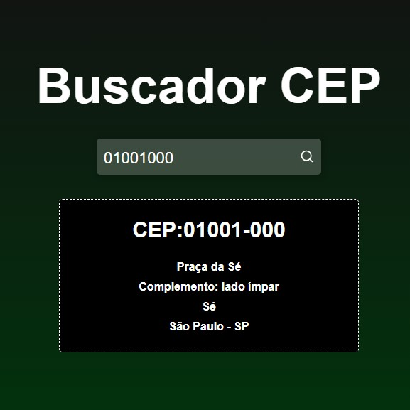
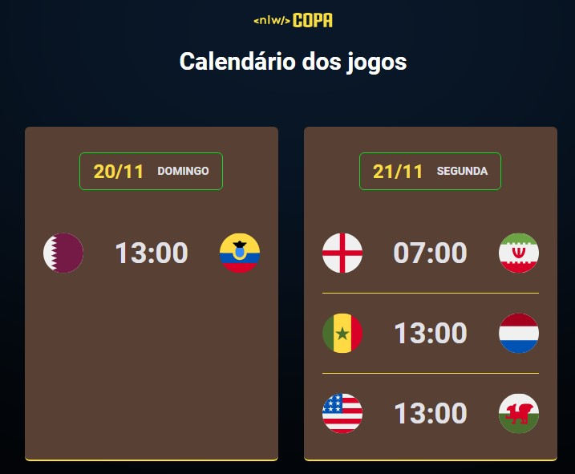
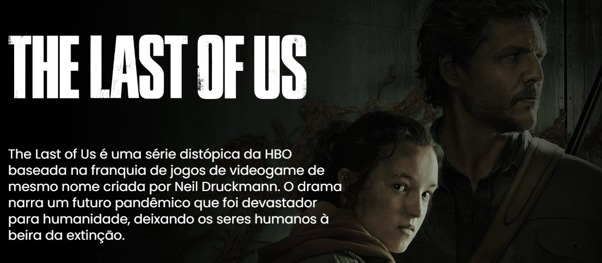
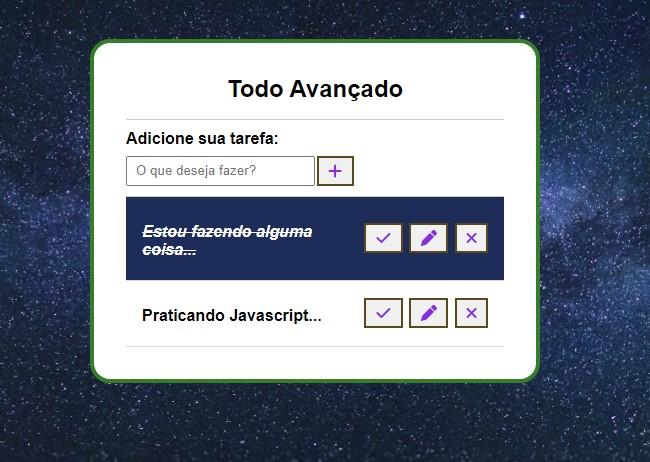
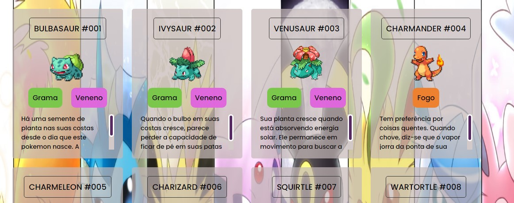
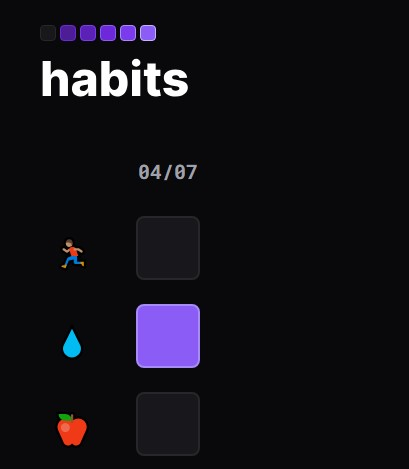

-

Este projeto foi construído para receber um CEP informado pelo usuário e, com base no valor informado, buscar as informações correspondentes.
-

Este projeto exibe todos os jogos da fase de grupos da Copa do Mundo Qatar 2022.
-

Este projeto foi minha primeira experiência usando carrossel e gradiente.
-

Este projeto exibe tarefas a serem realizadas, sendo possível: adicionar, remover ou alterar tarefas.
-

Projeto pessoal usando GIFs, e, que no futuro, irei usar API para buscar dados adicionais sobre cada pokemon.
-

Projeto usado para adicionar tarefas a serem cumpridas durante o dia atual.